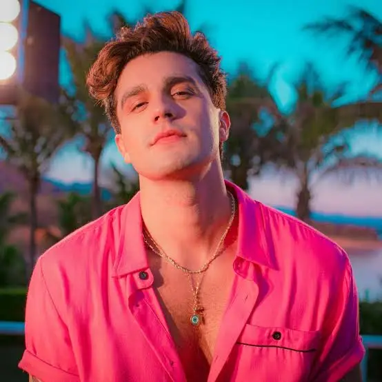

Um cantor sertanejo do Mato Grosso do Sul

Luan Santana iniciou a carreira em 2007, aos 16 anos, no Mato Grosso do Sul, ganhando destaque regional antes do sucesso nacional.
Estourou em 2009 com o hit "Meteoro" e o álbum Tô de Cara, consolidando-se rapidamente como fenômeno do sertanejo universitário com shows lotados e forte presença na internet
Em 2013, Luan Santana lançou o DVD e o álbum ao vivo “Nosso Tempo é Hoje”, o álbum de estúdio “As Melhores Até Aqui”, e o(EP) “Te Esperando”.
"Tudo aconteceu muito rápido. Às vezes, eu nem acredito que é verdade, mas é o que eu sempre quis".
Luan Santana
"Eu queria uma frase que fosse mais forte do que 'eu te amo', até que um dia a inspiração veio e eu escrevi: te vivo! que além de amar, a gente possa VIVER quem a gente ama".
Você pode conhecer mais sobre o cantor Clicando aqui